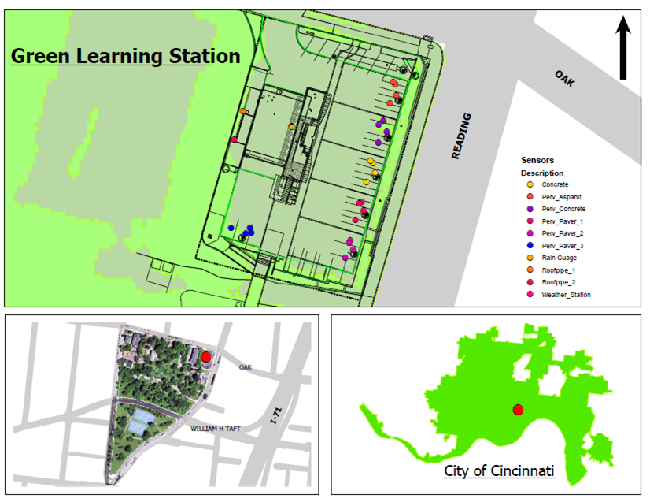
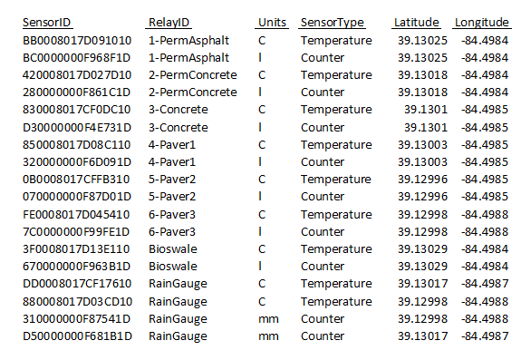

Original Purpose
Combined Sewer Systems
Original Purpose
Combined Sewer Systems
Green Learning Station

Green Learning Station

Green Learning Station

Green Learning Station
Methodology
Linksys Running OpenWRT

Sensor Relays

GPS
Controller
class AbstractController(Thread):
def __init__(self):
Thread.__init__(self)
self.sample_rate = 10
self.transports = None
self.sensor_handlers = []
self.data_handler = None
Controller
def run(self):
while not ltsense.exit_all_threads:
self.process_sensor_data()
for i in range(int(self.sample_rate)):
if ltsense.exit_all_threads:
break
else:
time.sleep(1)
logging.info('Exit Detected. Stopping Controller Thread')
Controller
def process_sensor_data(self):
sensors = []
for h in self.sensor_handlers:
# if not in a list, put in a list and extend (TODO: place in a helper library?)
if h.sensors is not None:
sensors.extend([h.sensors] if type(h.sensors) == str else h.sensors)
data = self.data_handler.render_data(sensors)
for t in self.transports:
t.send_package(data)
Identifiers
class AbstractIdentifier(object):
def __init__(self):
object.__init__(self)
def identify(self):
return 'Unimplemented'
Identifiers
class MacAddressIdentifier(AbstractIdentifier):
def __init__(self):
AbstractIdentifier.__init__(self)
self.adapter = 'eth0'
def identify(self):
s = socket.socket(socket.AF_INET, socket.SOCK_DGRAM)
info = fcntl.ioctl(s.fileno(), 0x8927, struct.pack('256s', self.adapter[:15]))
return ''.join(['%02x:' % ord(char) for char in info[18:24]])[:-1]
Identifiers
class NamedIdentifier(AbstractIdentifier):
def __init__(self):
AbstractIdentifier.__init__(self)
self.id = 'Unknown'
def identify(self):
return self.id
Identifiers
class UUIDIdentifier(AbstractIdentifier):
id_file = property(lambda self: self._id_file, lambda self, value: self._init_id_file(value))
def __init__(self):
AbstractIdentifier.__init__(self)
self.id_file = 'uuid'
def _init_id_file(self, value):
if path.isfile(value):
with open(value, 'r') as ufile:
self.__id = ufile.read()
else:
self.__id = str(uuid.uuid4())
with open(value, 'w') as ufile:
ufile.write(self.__id)
def identify(self):
return self.__id
Sensor Handlers
class AbstractSensorHandler(object):
def __init__(self):
object.__init__(self)
self.sensors = []
class GeneralSensorHandler(AbstractSensorHandler):
def __init__(self):
AbstractSensorHandler.__init__(self)
OWFS Sensor Handlers
class OWFSSensorHandler(AbstractSensorHandler):
def __init__(self):
AbstractSensorHandler.__init__(self)
self.device = 'u'
self._connected = False
def _ensure_connect(self):
# Avoid a direct dependency
import ow
if not self._connected:
ow.init(self.device)
self._connected = True
def _sensors(self):
import ow
self._ensure_connect()
sensors = []
try:
for s in ow.Sensor('/').sensorList():
if hasattr(s, 'temperature'):
sensors.append(TemperatureSensor(s))
if hasattr(s, 'humidity'):
sensors.append(HumiditySensor(s))
return sensors
except ow.exUnknownSensor as e:
logging.warn('Error Reading 1-Wire: {}'.format(e))
sensors = property(_sensors, lambda self, v: None)
Data Handlers
class PhidgetSensorHandler(AbstractSensorHandler):
def __init__(self):
self.device = None
self._attach_timeout = None
self._data_rate = None
self._sensors = None
def _try_init(self):
if all([self._data_rate, self._attach_timeout, self._sensors]):
try:
from Phidgets.Devices.InterfaceKit import InterfaceKit
from Phidgets.PhidgetException import PhidgetException
self.interface_kit = InterfaceKit()
self.interface_kit.setOnAttachHandler(lambda e: self._attach(e))
self.interface_kit.setOnDetachHandler(lambda e: self._detach(e))
self.interface_kit.setOnErrorhandler(lambda e: self._error(e))
self.interface_kit.setOnSensorChangeHandler(lambda e: self._sensor_change(e))
self.interface_kit.openPhidget()
self.interface_kit.waitForAttach(self._attach_timeout)
for i in range(self.interface_kit.getSensorCount()):
self.interface_kit.setDataRate(i, self._data_rate)
logging.info("Phidget Sensor Handler Initalized")
for s in self._sensors:
if s.port_num is not None:
s.current_data = self.interface_kit.getSensorValue(s.port_num)
logging.debug("Setting Initial Value for Sensor {} to {}".format(s.port_num, s.current_data))
else:
logging.warn("Cannot set Initial Value for Sensor {}".format(s.port_num))
except ImportError:
self.interface_kit = None
logging.error('Phidget Python Module not found. Did you install python-phidget?')
except PhidgetException as e:
self.interface_kit = None
logging.error("Could not Initalize Phidget Kit: {}".format(e.details))
def _read_sensors(self):
ready_sensors = []
for s in self._sensors:
if s.data is not None:
ready_sensors.append(s)
return ready_sensors
def _set_sensors(self, v):
logging.debug('Adding Phidget Sensors :: {}'.format(v))
self._sensors = v
self._try_init()
sensors = property(_read_sensors, _set_sensors)
attach_timeout = property(lambda self: self._attach_timeout,
lambda self, v: self._set_config('attach_timeout', v))
data_rate = property(lambda self: self._data_rate,
lambda self, v: self._set_config('data_rate', v))
def _set_config(self, prop, value):
if prop == 'data_rate':
self._data_rate = value
elif prop == 'attach_timeout':
self._attach_timeout = value
self._try_init()
def _attach(self, e):
self.device = e.device
logging.info("Phidget InterfaceKit {} Attached".format(self.device.getSerialNum()))
def _detach(self, e):
logging.warn("Phidget InterfaceKit {} Removed".format(e.device.getSerialNum()))
self.device = None
def _error(self, e):
logging.error("Phidget Error {} :: {}".format(e.eCode, e.description))
def _sensor_change(self, e):
# logging.debug("Phidget Analog Sensor Change :: Port: {} / Data: {}".format(e.index, e.value))
for s in self._sensors:
if s.port_type == 'analog' and s.port_num == e.index:
# Set a default ID if none given in config file
if s.id is None:
# Default ID is kit serial number::port
s.id = '{}:{}:{}'.format(self.device.getSerialNum(),
s.port_type, s.port_num)
s.current_data = e.value
Sensors
class AbstractSensor(object):
"""Base for all Sensors to Extend"""
def __init__(self):
object.__init__(self)
self.id = 'Unimplemented'
self.type = 'Unimplemented'
self.data = 'Unimplemented'
self.units = 'Unimplemented'
Sensors
class AbstractOwfsSensor(AbstractSensor):
def __init__(self, ow_sensor):
AbstractSensor.__init__(self)
try:
import ow
except ImportError:
logging.error('1-Wire Python Module not found. Did you install python-ow?')
sys.exit(8)
self.ow_sensor = ow_sensor
self.id = ow_sensor.id
Sensors
class TemperatureSensor(AbstractOwfsSensor):
def __init__(self, ow_sensor):
AbstractOwfsSensor.__init__(self, ow_sensor)
self.units = 'C'
self.type = 'Temperature'
def _read_temp(self):
return self.ow_sensor.temperature.strip()
data = property(_read_temp, lambda self, v: None)
Sensors
class HumiditySensor(AbstractOwfsSensor):
def __init__(self, ow_sensor):
AbstractOwfsSensor.__init__(self, ow_sensor)
self.units = '%'
self.type = 'Humidity'
def _read_temp(self):
return self.ow_sensor.humidity.strip()
data = property(_read_temp, lambda self, v: None)
Sensors
class PhidgetSensor(AbstractSensor):
def __init__(self):
AbstractSensor.__init__(self)
# Can be analogue or digital
self.port_type = None
self.port_num = None
self.current_data = None
self.id = None
self.data_formula = None
self._model = None
Sensors
def _select_phidget(self, model_number):
model_init = {
# Precision Light Sensor
'1127': {'type': 'Light',
'units': 'lux',
'data': lambda x: x},
# Sound Sensor
'1133': {'type': 'Sound',
'units': 'dB',
'data': lambda x: 16.801 * math.log(x) + 9.872},
# Absolute Air Pressure Sensor (20-400 kPa)
'1140': {'type': 'Air Pressure',
'units': 'kPa',
'data': lambda x: (x / 2.421) + 3.478}
}.get(model_number)
self.type = model_init['type']
self.units = model_init['units']
self.data_formula = model_init['data']
self._model = model_number
Data Formats
class AbstractDataHandler(object):
def __init__(self):
object.__init__(self)
self.identifier = None
self.location = None
self.gps_fields = {'location': ['longitude', 'latitude', 'altitude'],
'delta': ['speed', 'track', 'climb'],
'accuracy': ['longitude_error', 'latitude_error',
'altitude_error', 'speed_error',
'climb_error', 'track_error']}
def render_data(self, sensors):
pass
def timestamp(self):
# Webservice expects time as a long in miliseconds.
# time.time() is seconds as a float
return int(round(time.time() * 1000))
Sense XML
class SenseXMLDataHandler(AbstractDataHandler):
def __init__(self):
AbstractDataHandler.__init__(self)
def _gps_block(self, doc, name, attributes, gps):
node = doc.createElement(name)
for a in attributes:
node.setAttribute(a, gps[a])
return node
def render_data(self, sensors):
doc = Document()
root = doc.createElement('sensedata')
pack = doc.createElement('package')
pack.setAttribute("timestamp", '{0:d}'.format(self.timestamp()))
pack.setAttribute("id", self.identifier.identify())
# Location
if self.location is not None:
gps = self.location.location()
if gps is not None:
xml_gps = doc.createElement('gps')
for section, attrs in self.gps_fields.iteritems():
xml_gps.appendChild(self._gps_block(doc, section, attrs, gps))
pack.appendChild(xml_gps)
sens = doc.createElement('sensors')
err = []
for s in sensors:
sen_node = doc.createElement('sensor')
sen_node.setAttribute('id', s.id)
sen_node.setAttribute('type', s.type)
sen_node.setAttribute('units', s.units)
ddata = doc.createElement('data')
try:
ddata.appendChild(doc.createTextNode(s.data))
except ltsense.sensors.SensorReadException as e:
err.append(e.value)
sen_node.appendChild(ddata)
sens.appendChild(sen_node)
pack.appendChild(sens)
# errors
err_list = None
if len(err) > 0:
err_list = doc.createElement('errors')
for e in err:
err_node = doc.createElement('error')
err_node.appendChild(doc.createTextNode(e))
err_list.appendChild(err_node)
if err_list is not None:
pack.appendChild(err_list)
root.appendChild(pack)
doc.appendChild(root)
logging.debug('Generated XML\n' + doc.toprettyxml())
# Data Signature
return doc.toxml()
Sense JSON
class SenseJsonDataHandler(AbstractDataHandler):
def __init__(self):
AbstractDataHandler.__init__(self)
def render_data(self, sensors):
data = {'id': self.identifier.identify(),
'timestamp': self.timestamp()}
# Location
if self.location is not None:
loc_info = {}
gps = self.location.location()
if gps is not None:
for section, attrs in self.gps_fields.iteritems():
loc_section = {}
for a in attrs:
loc_section[a] = gps[a]
loc_info[section] = loc_section
data['gps'] = loc_info
sensor_data = []
for s in sensors:
sensor_data.append({'id': s.id,
'type': s.type,
'units': s.units,
'data': s.data})
data['sensors'] = sensor_data
# LtSense only sends single packages, but BigSense
# can accept multiple packages with both XML and JSON
data = [data]
logging.debug('Generated JSON {}'.format(json.dumps(data, indent=2)))
return json.dumps(data)
Transports
class AbstractTransport(object):
"""Base class for all transport handlers. It's not very useful to
extend this class directly. It's better to extend the QueuedTransport"""
def __init__(self):
object.__init__(self)
self._security = None
def send_package(self, payload):
if self._security is not None:
signature = self._security.sign_data(payload)
logging.info("Data Signature: " + signature)
return "%s\n\n%s" % (payload, signature)
else:
return payload
def _init_security(self, security):
self._security = security
if security is not None:
security.initalize_security()
security = property(lambda self: self._security, lambda self, value: self._init_security(value))
Queued Transport
class QueuedTransport(AbstractTransport, Thread):
"""Base class for all transports that wish to use a queueing system.
The send_package() function is implemented and a new abstract function,
_run_transport() needs to be implemented in the subclass to transport the
data."""
def __init__(self):
self.pause_rate = 0.10
self.timeout = 10.0
self.queue = None
AbstractTransport.__init__(self)
Thread.__init__(self)
self.start()
Queued Transport
def run(self):
"""Main thread to handle queue. In most cases, this function
should not need to be overridden."""
while not ltsense.exit_all_threads:
if self.queue is None:
logging.info('Queue Not Initalized Yet. Waiting...')
time.sleep(float(self.pause_rate))
continue
payload = self.queue.dequeue()
if payload is None:
continue
try:
if self._run_transport(payload):
logging.debug('Payload transported. (Queue Size: %s)' % self.queue.size)
time.sleep(float(self.pause_rate))
else:
logging.warn('Error delivering payload. Requeueing (Queue Size:%s). Retry in %s' % (self.queue.size, self.timeout))
self.queue.enqueue(payload)
time.sleep(float(self.timeout))
except:
logging.error('Unknown exception %s. Requeueing (Queue Size:%s). Retry in %s' % (sys.exc_info()[0], self.queue.size, self.timeout))
self.queue.enqueue(payload)
time.sleep(float(self.timeout))
logging.info('Exit Detected. Stopping Transport Thread')
Queued Transport
def send_package(self, payload):
"""Adds the payload to the queue which is handeled by the queue thread."""
payload = AbstractTransport.send_package(self, payload)
self.queue.enqueue(payload)
def _run_transport(self, payload):
"""Implement this function in subclasses to transport data.
Return false if the data failed to transport so it will be
placed back in the queue."""
logging.warn('Unimplemented Queue Transport Detected. You have tried to use an abstract class. Did you want QueuedHttpPostTransport?')
return True
HTTP Queued Transport
class QueuedHttpPostTransport(QueuedTransport):
def __init__(self, url=None):
self.url = url
QueuedTransport.__init__(self)
def _run_transport(self, payload):
try:
logging.debug('Preparing payload for transport to %s' % self.url)
urllib2.urlopen(self.url, payload)
return True
except (urllib2.HTTPError, urllib2.URLError) as err:
msg = err.code if isinstance(err, urllib2.HTTPError) else err.reason
logging.error('HTTP Error %s' % msg)
return False
Local File Transport
class LocalFileTransport(AbstractTransport):
def __init__(self, directory=None, file_extension='json'):
self.directory = directory
self.file_extension = file_extension
self._sequence = 1
AbstractTransport.__init__(self)
def __next_file(self):
while True:
check = path.join(self.directory, '{}.{}'.format(self._sequence, self.file_extension))
if not path.isfile(check):
return check
else:
self._sequence += 1
Local File Transport
def send_package(self, payload):
"""Writes the payload to disk"""
payload = AbstractTransport.send_package(self, payload)
if self.directory is None:
logging.error('No directory specified')
elif not path.isdir(self.directory):
logging.error('{} does not exist or is not a directory'.format(self.directory))
else:
next_file = path.join(self.__next_file())
with open(next_file, 'w') as f:
logging.debug("Writing data to {}".format(next_file))
f.write(payload)
Queues
class AbstractQueue(object):
def __init__(self):
object.__init__(self)
self.queue_timeout = 1.0 # in seconds
self.size = -1
def dequeue(self):
"""Pulls latest item from queue or returns None"""
raise QueueException("Unimplemented Abstract Queue Function")
def enqueue(self, item):
"""Adds element to queue"""
raise QueueException("Unimplemented Abstract Queue Function")
Queues
class MemoryQueue(AbstractQueue):
def __init__(self):
AbstractQueue.__init__(self)
self.__queue = Queue()
def dequeue(self):
try:
return self.__queue.get(False, self.queue_timeout)
except Empty:
return None
def enqueue(self, item):
self.__queue.put(item)
size = property(lambda self: self.__queue.qsize(), lambda self, v: None)
Queues
class SQLiteQueue(AbstractQueue):
def __init__(self):
AbstractQueue.__init__(self)
self.sql_file = None
self.__conn = None
self.sql_lock = Lock()
def _get_data_file(self):
return self.sql_file
def _set_data_file(self, df):
self.sql_file = df
data_file = property(_get_data_file, _set_data_file)
Queues
def dequeue(self):
self.sql_lock.acquire()
retval = None
for row in self.__cursor().execute('SELECT id,payload FROM queue ORDER BY id ASC LIMIT 1'):
self.__cursor().execute('DELETE FROM queue WHERE id = ?', [row[0]])
self.__conn.commit()
retval = row[1]
self.sql_lock.release()
return retval
def enqueue(self, item):
self.sql_lock.acquire()
self.__cursor().execute('INSERT INTO queue(payload) VALUES(?)', [item])
self.__conn.commit()
self.sql_lock.release()
GPS
def run(self):
try:
while not ltsense.exit_all_threads:
report = self._gps.next()
# Wait for a 3D Fix
if report['class'] == 'TPV' and report['mode'] == 3:
self.longitude = str(report.lon) if 'lon' in report else ''
self.latitude = str(report.lat) if 'lat' in report else ''
self.altitude = str(report.alt) if 'alt' in report else ''
self.speed = str(report.speed) if 'speed' in report else ''
self.track = str(report.track) if 'track' in report else ''
self.climb = str(report.climb) if 'climb' in report else ''
self.longitude_error = str(report.epx) if 'epx' in report else ''
self.latitude_error = str(report.epy) if 'epy' in report else ''
self.altitude_error = str(report.epv) if 'epv' in report else ''
self.speed_error = str(report.eps) if 'eps' in report else ''
self.climb_error = str(report.epc) if 'epc' in report else ''
self.track_error = str(report.epd) if 'epd' in report else ''
if not self.location_ready:
logging.info('GPS 3D Lock Acquired')
self.location_ready = True
# We've lost our GPS fix. Stop adding Location info
elif report['class'] == 'TPV' and report['mode'] != 3:
if self.location_ready:
logging.info('GPS 3D Lock Lost (Mode:{})'.format(report['mode']))
self.location_ready = False
time.sleep(self.poll_rate)
Security
class DataSecurity(object):
def __init__(self):
object.__init__(self)
self.data_dir = None
self.ready = False
self.key_file = 'key.pem'
self.key_size = 2048
self._key = None
def initalize_security(self):
pass
def sign_data(self, data):
return 'Unimplemented'
Security
def initalize_security(self):
if self.data_dir is not None:
if not path.isdir(self.data_dir):
logging.error('Security Data Directory does not exist or is not a directory: %s' % self.data_dir)
else:
key_path = path.join(self.data_dir, self.key_file)
if path.isfile(key_path):
logging.info("Loading existing keys from %s. PEM: %s" % (self.data_dir, self.key_file))
with open(key_path, 'rb') as fd:
self._key = rsa.PrivateKey.load_pkcs1(fd.read())
self.ready = True
else:
logging.info("No keys found. Generating New Keys")
(pubkey, privkey) = rsa.newkeys(self.key_size)
pem = rsa.PrivateKey.save_pkcs1(privkey)
with open(key_path, 'wb') as fd:
fd.write(pem)
# reread the file we just wrote
with open(key_path) as fd:
self._key = rsa.PrivateKey.load_pkcs1(fd.read())
self.ready = True
def sign_data(self, data):
return base64.b64encode(rsa.sign(data, self._key, 'SHA-1')).decode('UTF-8')
Config
[General]
sample_rate = 15
[Data]
[[primary]]
type = sense.json
[[[Identifier]]]
type = name
id = PDXPython01
[[[Location]]]
type = gps
[Transport]
[[http]]
type = http
url = http://localhost:8002/Sensor.sense.json
pause_rate = 1.0
timeout = 10.0
[[[Queue]]]
type = sqlite
data = /var/lib/ltsense/buffer.http.db
[[[Security]]]
type = rsa
data_dir = /var/lib/ltsense/
keyf_file = rsa.pem
key_size = 2048
[Handlers]
[[onewire]]
type = 1wire
[[phidget]]
type = phidget
sensors = $light,$sound,$pressure
attach_timeout = 10000
data_rate = 4
[Sensors]
[[light]]
type = phidget
port_type = analog
port_num = 7
model = 1127
[[sound]]
type = phidget
port_type = analog
port_num = 6
model = 1133
[[pressure]]
type = phidget
port_type = analog
port_num = 5
model = 1140
Sense XML
34
50
2.45
Sense XML with GPS Data
21.2188
26.9396
Sense XML with GPS Data
{
"timestamp": 1485541636692,
"sensors": [
{
"units": "C",
"data": "17.9062",
"type": "Temperature",
"id": "1BEA03020000"
}
],
"id": "MyTestRelay01",
"gps": {
"delta": {
"track": "328.76",
"climb": "0.0",
"speed": "0.0"
},
"location": {
"latitude": "47.620651667",
"altitude": "127.4",
"longitude": "-122.320985"
},
"accuracy": {
"track_error": "",
"longitude_error": "124.797",
"climb_error": "",
"speed_error": "249.59",
"latitude_error": "40.201",
"altitude_error": "34.5"
}
}
}
]
RSA Signature Verification
34 50 2.45
BigSense Web Service API

Example Query